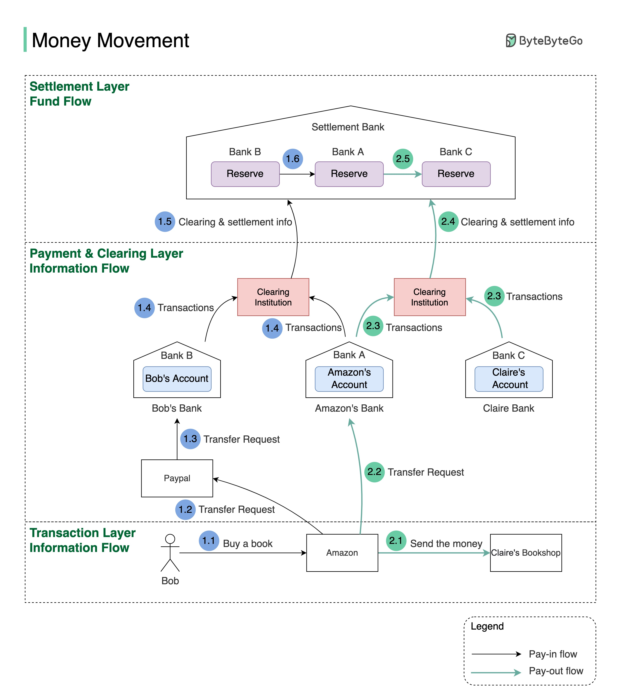

One picture is worth more than a thousand words. This is what happens when you buy a product using Paypal/bank card under the hood.

To understand this, we need to digest two concepts: clearing & settlement. Clearing is a process that calculates who should pay whom with how much money; while settlement is a process where real money moves between reserves in the settlement bank.
Let’s say Bob wants to buy an SDI book from Claire’s shop on Amazon.
Bob buys a book on Amazon using Paypal.
Amazon issues a money transfer request to Paypal.
Since the payment token of Bob’s debit card is stored in Paypal, Paypal can transfer money, on Bob’s behalf, to Amazon’s bank account in Bank A.
Both Bank A and Bank B send transaction statements to the clearing institution. It reduces the transactions that need to be settled. Let’s assume Bank A owes Bank B $100 and Bank B owes bank A $500 at the end of the day. When they settle, the net position is that Bank B pays Bank A $400.
Amazon informs the seller (Claire) that she will get paid soon.
Amazon issues a money transfer request from its owe bank (Bank A) to the seller bank (bank C). Here both banks record the transactions, but no real money is moved.
Both Bank A and Bank C send transaction statements to the clearing institution.
Notice that we have three layers:
Transaction layer: where the online purchases happen
Payment and clearing layer: where the payment instructions and transaction netting happen
Settlement layer: where the actual money movement happen
The first two layers are called information flow, and the settlement layer is called fund flow.
You can see the information flow and fund flow are separated. In the info flow, the money seems to be deducted from one bank account and added to another bank account, but the actual money movement happens in the settlement bank at the end of the day.
Because of the asynchronous nature of the info flow and the fund flow, reconciliation is very important for data consistency in the systems along with the flow.
It makes things even more interesting when Bob wants to buy a book in the Indian market, where Bob pays USD but the seller can only receive INR.